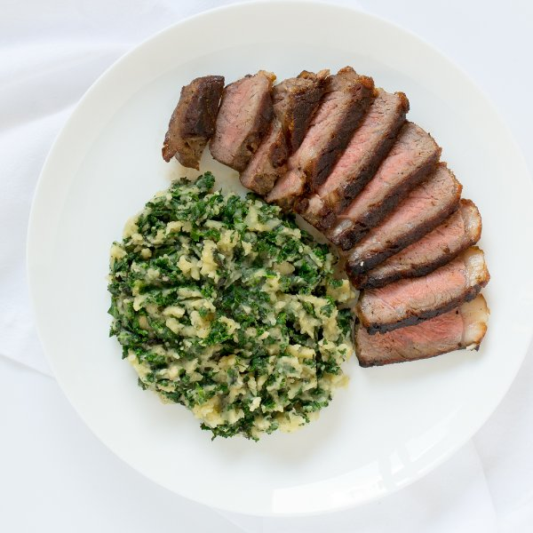

Pan-Seared Strip Steak with Kale Colcannon (Irish Mashed Potatoes)

Nutrition (per serving)
682.6 kcalCalories
43.8 gProtein
43.6 gCarbs
38.8 gFat
Full nutrition table
| Calories | 682.6 kcal |
| Total fat | 38.8 g |
| Saturated fat | 20.2 g |
| Trans fat | 1.8 g |
| Cholesterol | 134.3 mg |
| Sodium | 165.3 mg |
| Carbohydrates | 43.6 g |
| Fiber | 6.9 g |
| Sugars | 3.4 g |
| Protein | 43.8 g |
| Potassium | 1724.1 mg |
| Calcium | 169 mg |
| Iron | 5.9 mg |
| Vitamin A | 56.6 IU |
| Vitamin C | 116.3 mg |
| Vitamin D | 15.3 IU |
Cookware
Ingredients
- 8 fl ozchicken or vegetable broth
- 4 clovesgarlic
- 2 buncheskale
- 1 ½ lbstriploin (New York strip) steak
- 4 mediumyellow potatoes
- black pepper
- butter, unsalted
- salt
- virgin coconut oil
Steps
- Wash and dry the fresh produce.4 medium yellow potatoes
2 bunches kale - Peel and quarter the potatoes; transfer to a medium saucepan.
- Cover the potatoes with hot water (from the tap); bring to a boil over high heat.
- Cut out and discard the center stems from the kale leaves; slice the leaves crosswise into ⅛-inch strips and transfer to a large bowl.
- Preheat a skillet over medium-high heat.
- While the skillet heats up, pat dry the steak with paper towels and place on a plate. Season the steak generously with salt and pepper on both sides.1 ½ lb striploin (New York strip) steak
1 tsp salt
½ tsp black pepper - Once the water in the saucepan is boiling, reduce the heat to medium and cook until the potatoes are tender when pierced with a knife, 15 to 20 minutes. Once done, drain the potatoes and return to the saucepan; cover to keep warm.
- Once the skillet is hot, add coconut oil and swirl to coat the bottom.1 tbsp virgin coconut oil
- Carefully place the steak in the skillet; flipping every 15 to 30 seconds, cook the steak until desired doneness (5 to 7 minutes for medium-rare). (Use a thermometer or cut into the steak to check the doneness.) Once done, transfer the steak to a plate and let it rest for 5 to 10 minutes.
- While the steak cooks, trim off and discard the root ends of the garlic; peel and mince or press the garlic.4 cloves garlic
- Once the steak has been transferred, reduce the heat to medium. Add the garlic and kale; season with salt and pepper. Cook, stirring frequently, until the kale is wilted, 3 to 4 minutes.½ tsp salt
¼ tsp black pepper - Add butter, broth, salt, and pepper to the potatoes; mash with a potato masher until smooth.4 tbsp butter, unsalted
8 fl oz (1 cup) chicken or vegetable broth
½ tsp salt
¼ tsp black pepper - Add the kale to the saucepan and mash with the potatoes.
- To serve, divide the colcannon and steak between plates. Enjoy!